ggplot(data = <DATA>) +
<GEOM>(mapping = aes(<MAPPINGS>)) +
<SCALES> +
<FACETS> +
<THEME>Day 4 (AM): Data Visualization with ggplot2
SC INBRE Biostatistics Summer Intensive 2026
1 Overview
By the end of this session you will be able to:
- Describe the grammar of graphics and how
ggplot2implements it - Choose the right geom for the data and question at hand
- Visualize distributions, relationships, and group comparisons
- Use
labs(),theme(), scales, and facets to produce publication-ready figures - Annotate plots and save them to disk with
ggsave()
We use two datasets throughout: the Framingham Heart Study (which you already know) and the built-in mpg and diamonds datasets for some general plotting concepts.
2 The Grammar of Graphics
ggplot2 is built on the idea that every plot can be described by the same small set of components:
| Component | What it controls |
|---|---|
| Data | The tibble you are visualizing |
Aesthetics (aes()) |
How variables map to visual properties (x, y, color, size, shape) |
| Geoms | The geometric objects that represent the data (points, lines, bars, boxes) |
| Scales | How data values map to aesthetic values (axis limits, color palettes) |
| Facets | Splitting the plot into small multiples by a grouping variable |
| Theme | Non-data appearance (fonts, background, grid lines) |
Every ggplot2 plot follows the same template:
3 Exploratory Data Analysis: Two Fundamental Questions
Exploratory data analysis (EDA) is the practice of systematically examining your data before modeling. Two questions drive EDA:
- What is the variation within each variable? What is the typical value? How spread out are the values? Are there outliers?
- What is the covariation between variables? How do two or more variables move together?
Your choice of plot depends on the types of variables involved:
| Variables | Plot type |
|---|---|
| 1 continuous | Histogram, density, boxplot |
| 1 categorical | Bar chart |
| 1 continuous + 1 categorical | Boxplot, violin, frequency polygon |
| 2 continuous | Scatterplot, smoothed line, 2D bin |
| 2 categorical | Mosaic, count heatmap |
library(tidyverse)
library(this.path)
setwd(this.dir())
framingham <- read_csv("../../data/framingham.csv") |>
mutate(
male = factor(male, levels = c(0,1), labels = c("Female","Male")),
currentSmoker = factor(currentSmoker, levels = c(0,1), labels = c("Non-smoker","Smoker")),
prevalentHyp = factor(prevalentHyp, levels = c(0,1), labels = c("No","Yes")),
diabetes = factor(diabetes, levels = c(0,1), labels = c("No","Yes")),
TenYearCHD = factor(TenYearCHD, levels = c(0,1), labels = c("No","Yes")),
education = factor(education, levels = 1:4,
labels = c("Some HS","HS Diploma","Some College","College Degree"))
)
str(framingham)tibble [4,240 × 16] (S3: tbl_df/tbl/data.frame)
$ male : Factor w/ 2 levels "Female","Male": 2 1 2 1 1 1 1 1 2 2 ...
$ age : num [1:4240] 39 46 48 61 46 43 63 45 52 43 ...
$ education : Factor w/ 4 levels "Some HS","HS Diploma",..: 4 2 1 3 3 2 1 2 1 1 ...
$ currentSmoker : Factor w/ 2 levels "Non-smoker","Smoker": 1 1 2 2 2 1 1 2 1 2 ...
$ cigsPerDay : num [1:4240] 0 0 20 30 23 0 0 20 0 30 ...
$ BPMeds : num [1:4240] 0 0 0 0 0 0 0 0 0 0 ...
$ prevalentStroke: num [1:4240] 0 0 0 0 0 0 0 0 0 0 ...
$ prevalentHyp : Factor w/ 2 levels "No","Yes": 1 1 1 2 1 2 1 1 2 2 ...
$ diabetes : Factor w/ 2 levels "No","Yes": 1 1 1 1 1 1 1 1 1 1 ...
$ totChol : num [1:4240] 195 250 245 225 285 228 205 313 260 225 ...
$ sysBP : num [1:4240] 106 121 128 150 130 ...
$ diaBP : num [1:4240] 70 81 80 95 84 110 71 71 89 107 ...
$ BMI : num [1:4240] 27 28.7 25.3 28.6 23.1 ...
$ heartRate : num [1:4240] 80 95 75 65 85 77 60 79 76 93 ...
$ glucose : num [1:4240] 77 76 70 103 85 99 85 78 79 88 ...
$ TenYearCHD : Factor w/ 2 levels "No","Yes": 1 1 1 2 1 1 2 1 1 1 ...4 Visualizing Distributions
4.1 Continuous Variables: Histograms
A histogram bins a continuous variable and counts observations per bin. Always try several binwidth values — the pattern can change substantially.
First, we’ll use the default binwidth value, which ends up being 8 (I think):
ggplot(framingham, aes(x = sysBP)) +
geom_histogram(fill = "steelblue", color = "white") +
labs(x = "Systolic Blood Pressure (mmHg)", y = "Count",
title = "Distribution of Systolic Blood Pressure")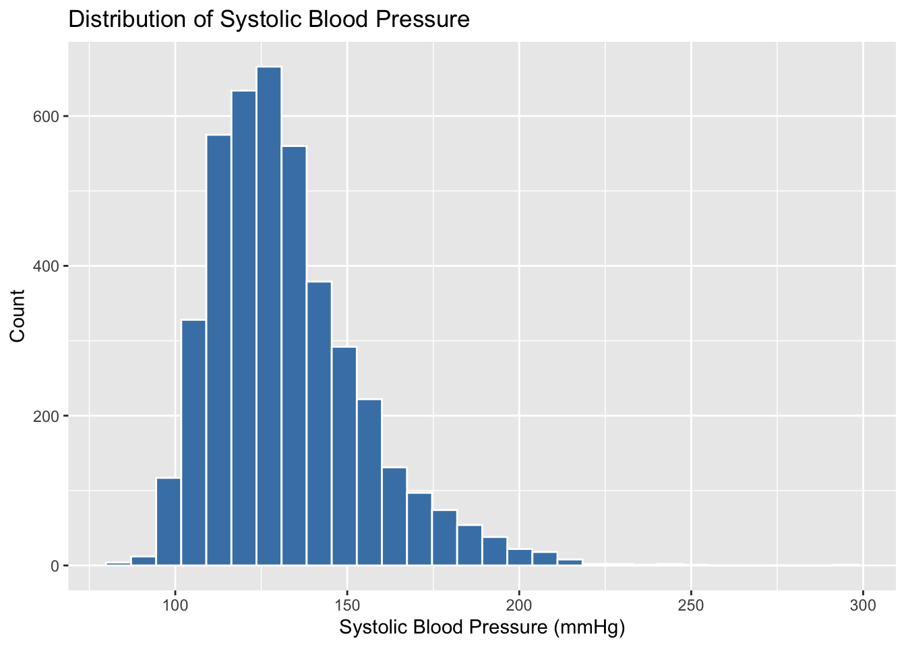
ggplot(framingham, aes(x = sysBP)) +
geom_histogram(binwidth = 5, fill = "steelblue", color = "white") +
labs(x = "Systolic Blood Pressure (mmHg)", y = "Count",
title = "Distribution of Systolic Blood Pressure")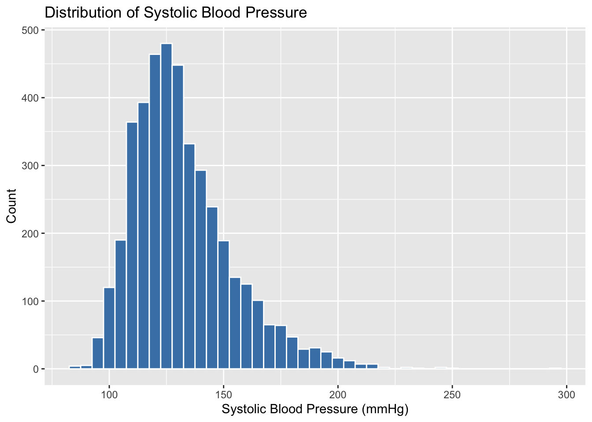
# Narrower bins reveal more detail
ggplot(framingham, aes(x = sysBP)) +
geom_histogram(binwidth = 2, fill = "steelblue", color = "white") +
labs(x = "Systolic Blood Pressure (mmHg)", y = "Count")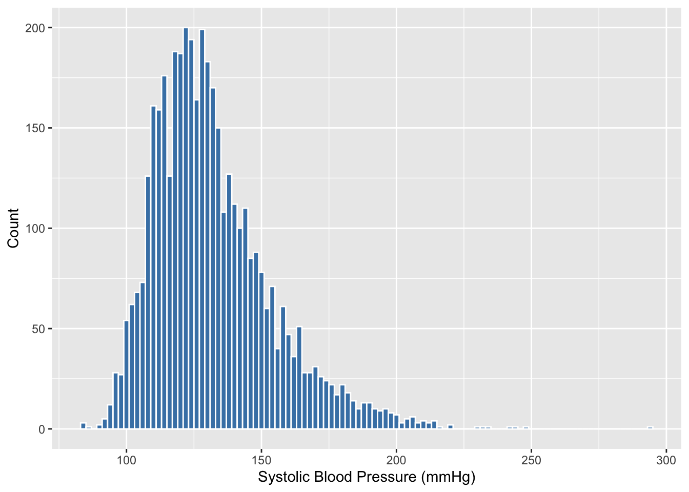
The lower the binwidth, the more bumpy the histogram is going to look.
4.2 Continuous Variables: Density Plots
A density plot is a smoothed histogram. It is better than a histogram for overlaying multiple groups because lines are easier to compare than bars.
ggplot(framingham, aes(x = sysBP, fill = male)) +
# alpha will control how transparent the fill colors are.
geom_density(alpha = 0.4) +
labs(x = "Systolic Blood Pressure (mmHg)", y = "Density",
fill = "Sex",
title = "Systolic BP Distribution by Sex")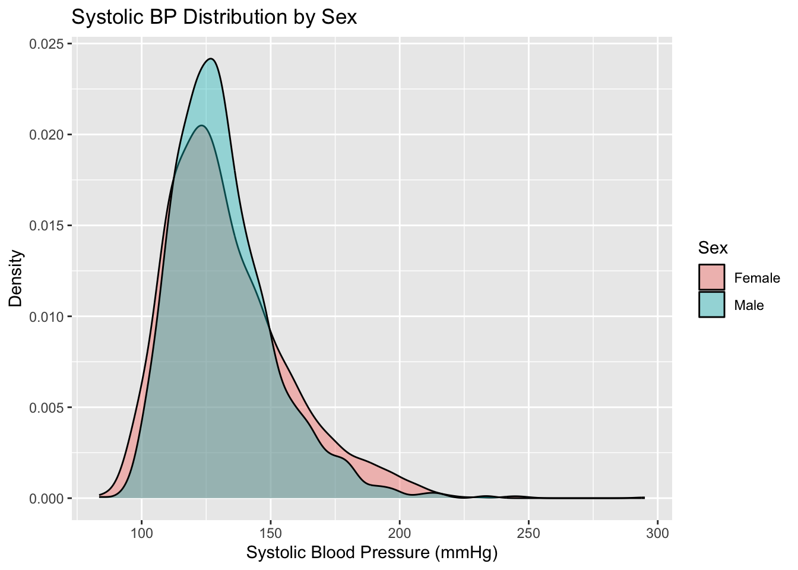
ggplot(framingham, aes(x = sysBP, fill = male)) +
# alpha will control how transparent the fill colors are.
geom_density(alpha = 1) +
labs(x = "Systolic Blood Pressure (mmHg)", y = "Density",
fill = "Sex",
title = "Systolic BP Distribution by Sex")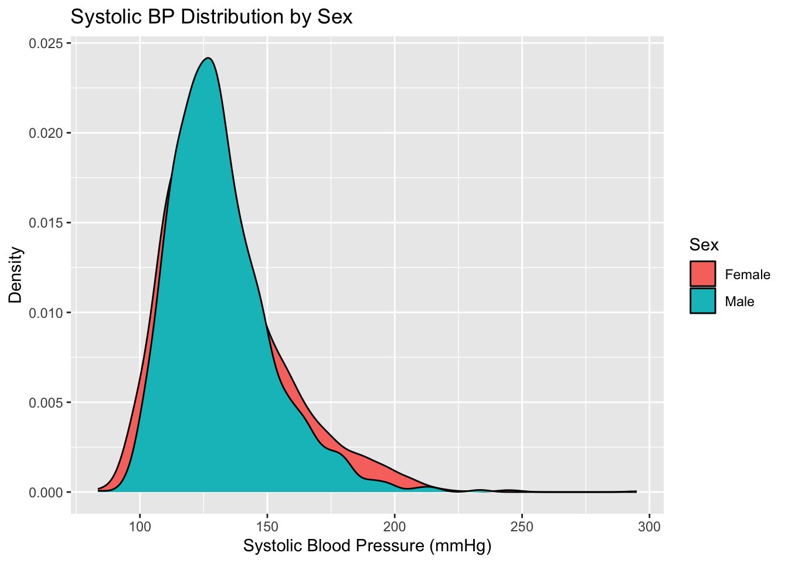
4.3 Categorical Variables: Bar Charts
ggplot(framingham, aes(x = education)) +
geom_bar(fill = "steelblue") +
labs(x = "Education Level", y = "Count",
title = "Education Distribution in Framingham Cohort") +
theme(axis.text.x = element_text(angle = 20, hjust = 1))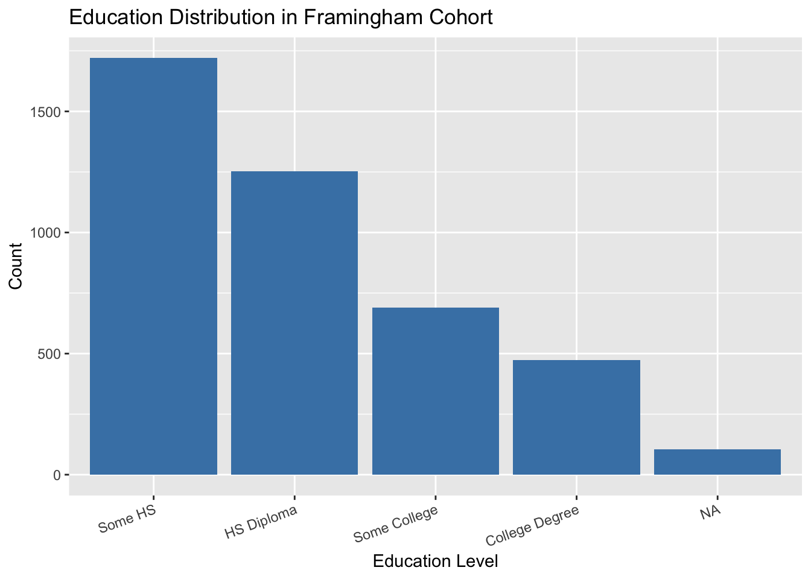
To plot proportions rather than counts, compute them first with dplyr and use geom_col():
framingham |>
count(education) |>
mutate(pct = n / sum(n) * 100) |>
ggplot(aes(x = education, y = pct)) +
geom_col(fill = "steelblue") +
labs(x = "Education Level", y = "Percent (%)",
title = "Education Distribution (%)") +
theme(axis.text.x = element_text(angle = 20, hjust = 1))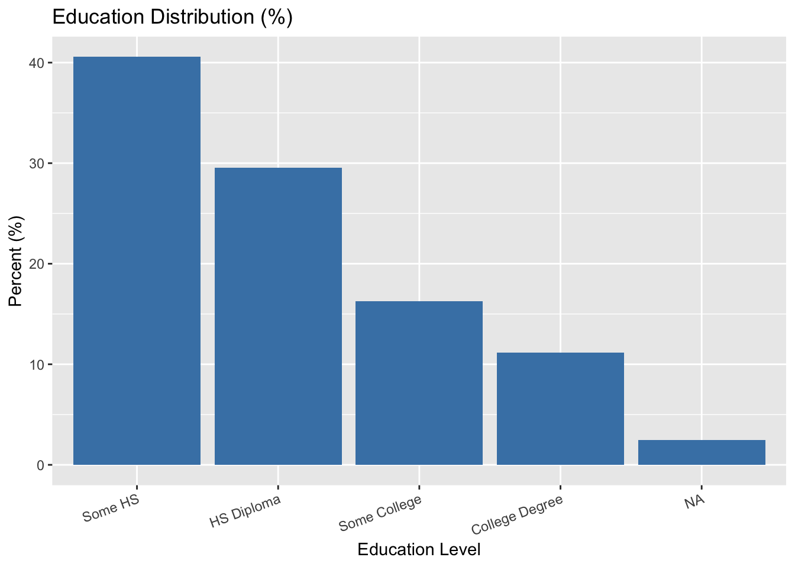
5 Visualizing Covariation
5.1 Continuous + Categorical: Boxplots
Boxplots show the median, IQR, and outliers compactly. They are ideal for comparing a continuous variable across groups.
ggplot(framingham, aes(x = male, y = sysBP)) +
geom_boxplot(fill = "steelblue", alpha = 0.7) +
labs(x = "Sex", y = "Systolic BP (mmHg)",
title = "Systolic Blood Pressure by Sex")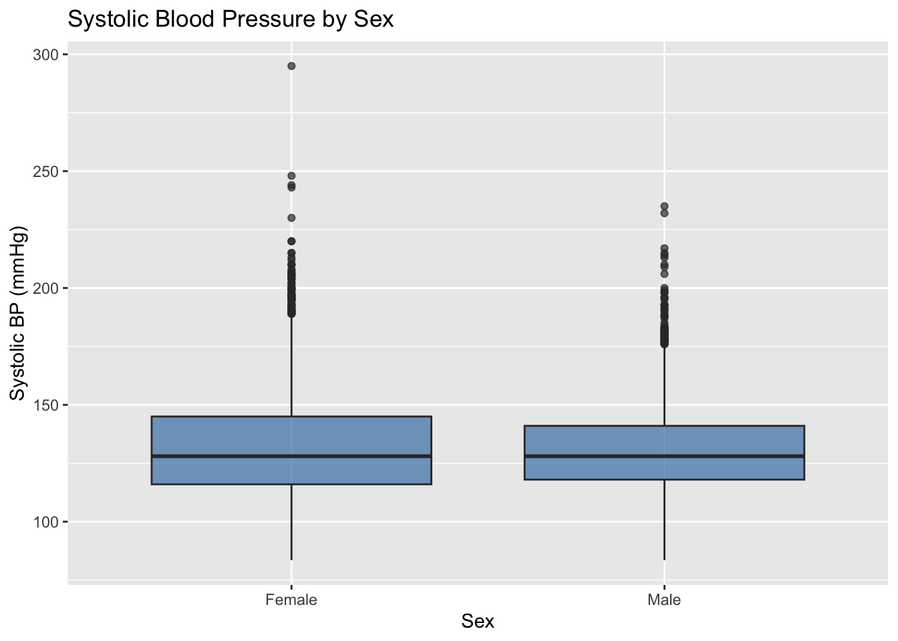
When you have many groups, order them by the median to make comparisons easier:
ggplot(framingham, aes(x = reorder(education, sysBP, FUN = median),
y = sysBP)) +
geom_boxplot(fill = "steelblue", alpha = 0.7) +
labs(x = "Education Level",
y = "Systolic BP (mmHg)",
title = "Systolic BP by Education Level",
subtitle = "Groups ordered by median BP") +
theme(axis.text.x = element_text(angle = 20, hjust = 1))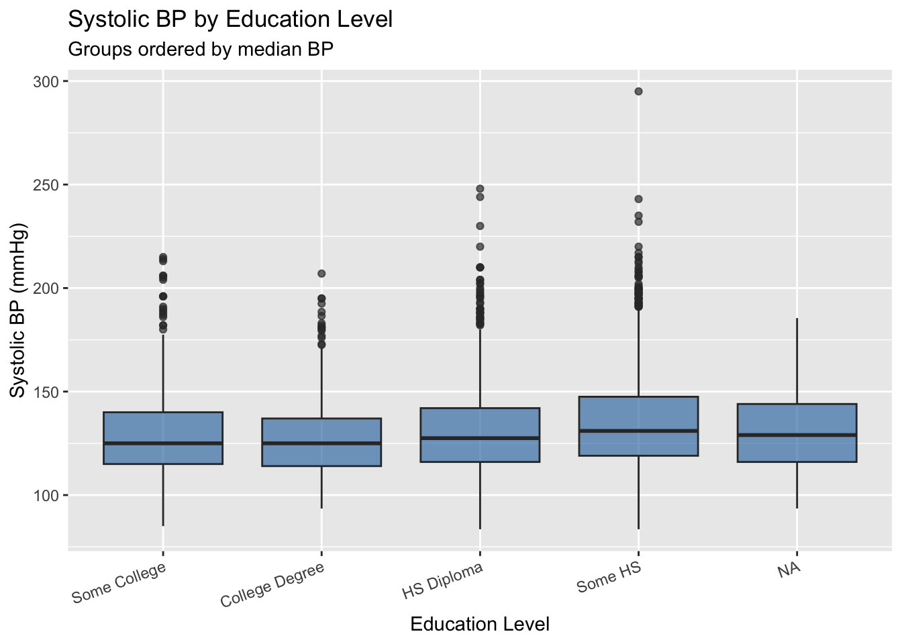
5.2 Continuous + Categorical: Violin Plots
A violin plot shows the full distribution shape, not just the summary statistics. Combine with a boxplot overlay for the best of both:
ggplot(framingham, aes(x = male, y = sysBP)) +
geom_violin(fill = "steelblue", alpha = 0.5) +
geom_boxplot(width = 0.1, fill = "white", outlier.size = 0.8) +
labs(x = "Sex", y = "Systolic BP (mmHg)",
title = "Systolic BP by Sex: Violin + Boxplot")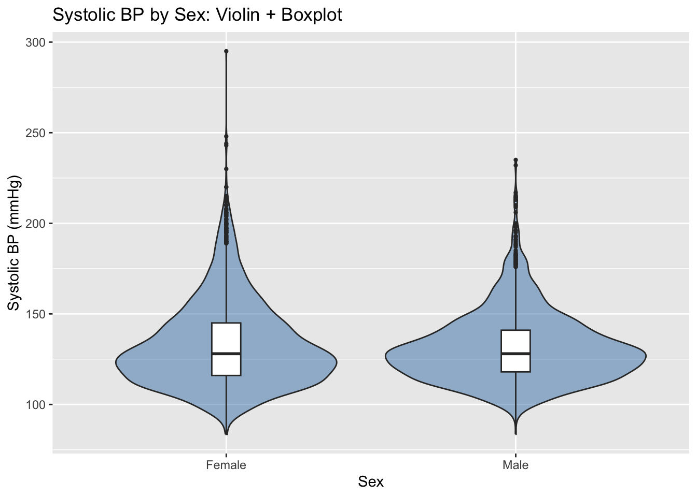
5.3 Continuous + Categorical: Frequency Polygons
geom_freqpoly() overlays distributions as lines rather than bars.
ggplot(framingham, aes(x = sysBP, color = male)) +
geom_freqpoly(binwidth = 5, linewidth = 1) +
labs(x = "Systolic BP (mmHg)", y = "Count", color = "Sex")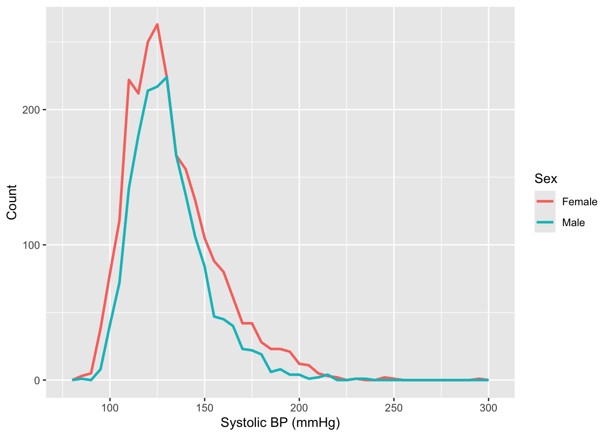
When groups differ greatly in size, use y = after_stat(density) to standardize:
# Density version -- better for comparing groups of unequal size
ggplot(framingham, aes(x = sysBP, y = after_stat(density), color = male)) +
geom_freqpoly(binwidth = 5, linewidth = 1) +
labs(x = "Systolic BP (mmHg)", y = "Density", color = "Sex")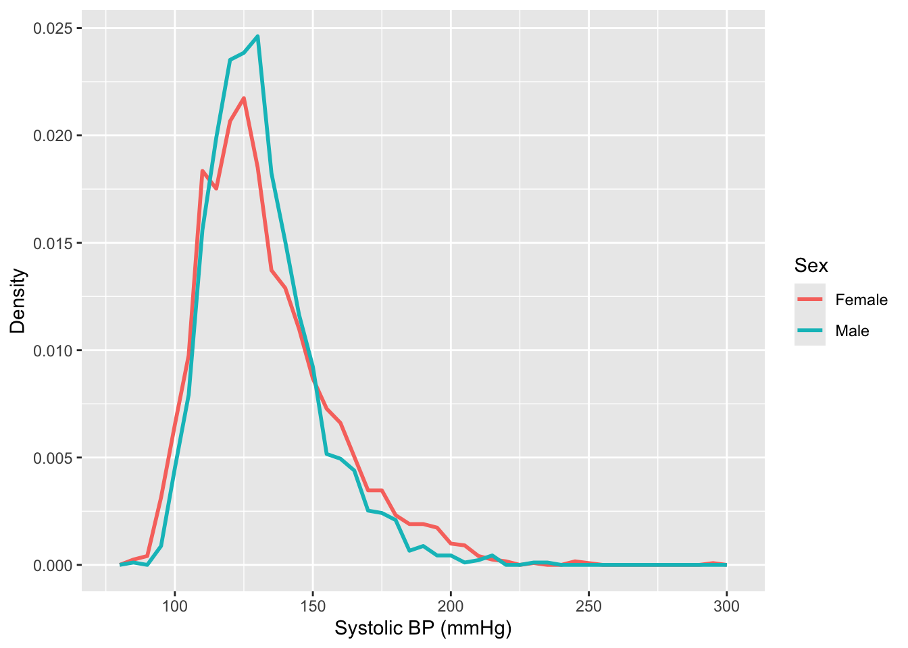
5.4 Two Continuous Variables: Scatterplots
ggplot(framingham, aes(x = age, y = sysBP)) +
geom_point(alpha = 0.3) +
labs(x = "Age (years)", y = "Systolic BP (mmHg)",
title = "Systolic BP vs. Age")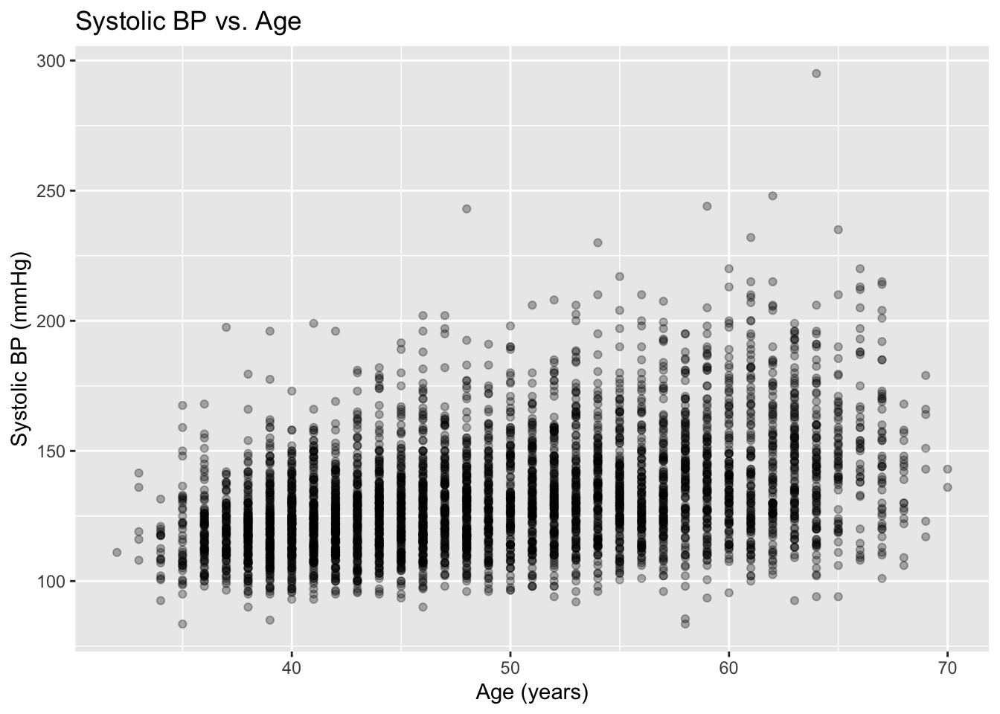
Add a smooth trend line with geom_smooth():
ggplot(framingham, aes(x = age, y = sysBP)) +
geom_point(alpha = 0.2) +
# method = "loess" lines can show non-linear trends.
geom_smooth(method = "loess", color = "firebrick", se = TRUE) +
labs(x = "Age (years)", y = "Systolic BP (mmHg)",
title = "Systolic BP vs. Age with Loess Smoother")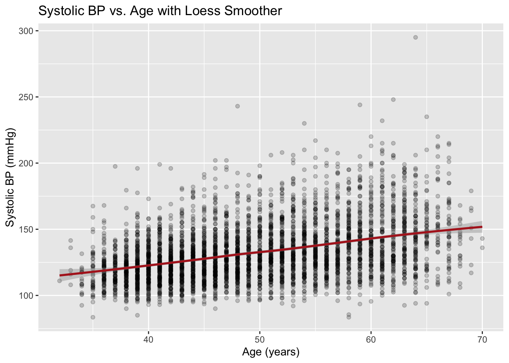
Map a third variable to color:
ggplot(framingham, aes(x = age, y = sysBP, color = male)) +
geom_point(alpha = 0.3) +
# method = "lm" only shows linear trends.
geom_smooth(method = "lm", se = FALSE) +
labs(x = "Age (years)", y = "Systolic BP (mmHg)",
color = "Sex",
title = "Systolic BP vs. Age by Sex")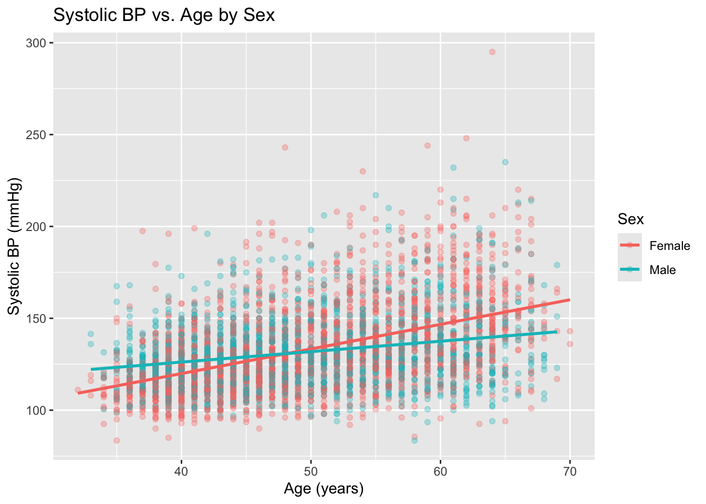
5.4.1 Log Transformations
When a variable is right-skewed, a log transform often reveals structure hidden in the raw scale. Use scale_x_log10() to keep the original axis labels:
ggplot(diamonds, aes(x = carat, y = price)) +
geom_bin2d() +
labs(title = "Diamond Price vs. Carat: Raw scale")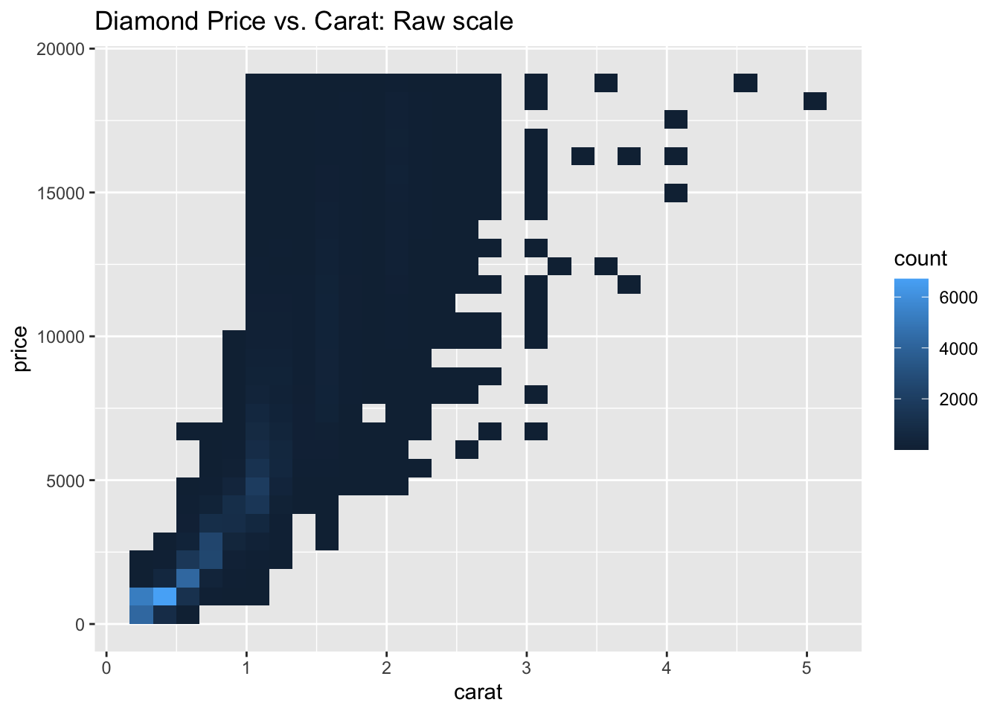
ggplot(diamonds, aes(x = carat, y = price)) +
geom_bin2d() +
scale_x_log10() +
scale_y_log10() +
labs(title = "Diamond Price vs. Carat: Log-log scale")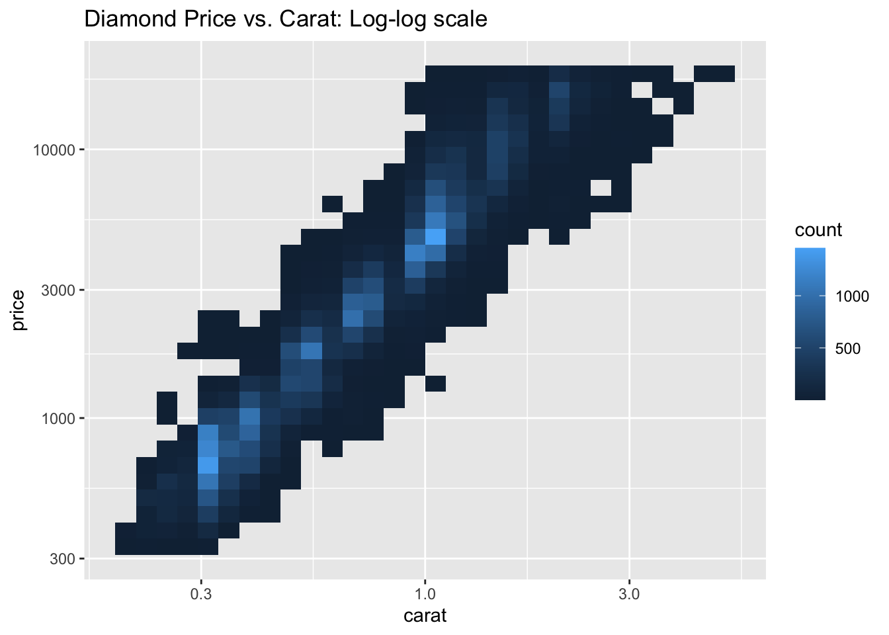
5.4.2 Overplotting
Large datasets suffer from overplotting — points pile on top of each other and the density is invisible. Solutions:
# Alpha transparency
ggplot(framingham, aes(x = age, y = sysBP)) +
geom_point(alpha = 0.1) +
labs(title = "Alpha transparency")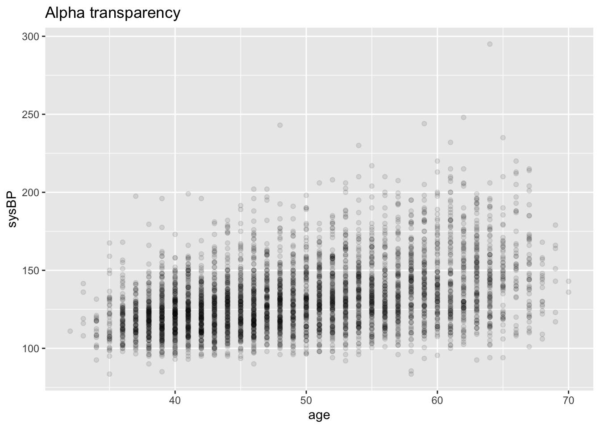
# 2D bins
ggplot(framingham, aes(x = age, y = sysBP)) +
geom_bin2d(bins = 30) +
scale_fill_viridis_c() +
labs(title = "2D bin plot")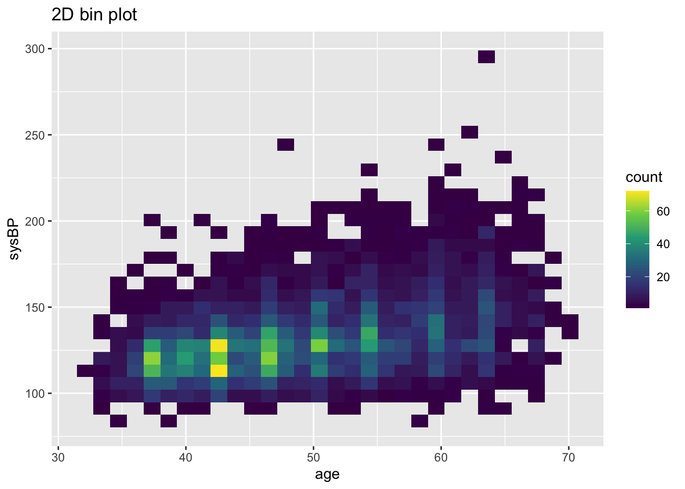
6 Faceting
Faceting splits a plot into small multiples by a variable — often cleaner than color coding when there are many groups.
ggplot(framingham, aes(x = age, y = sysBP)) +
geom_point(alpha = 0.2) +
geom_smooth(method = "lm", se = FALSE, color = "firebrick") +
facet_wrap(~ male) +
labs(x = "Age", y = "Systolic BP (mmHg)",
title = "Systolic BP vs. Age, by Sex")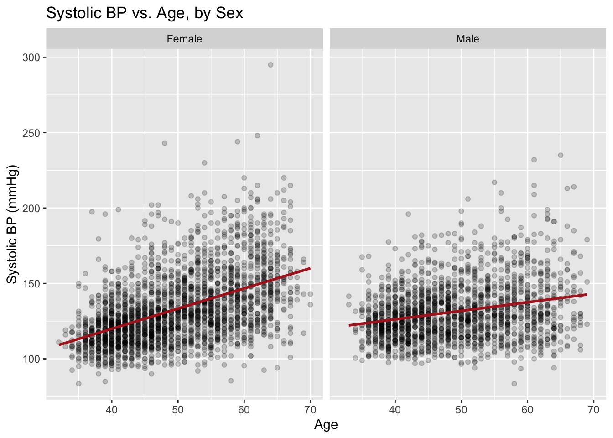
You can allow the x, y, or both scales to be unique across plots.
ggplot(framingham, aes(x = age, y = sysBP)) +
geom_point(alpha = 0.2) +
geom_smooth(method = "lm", se = FALSE, color = "firebrick") +
facet_wrap(~ male, scales = "free") +
labs(x = "Age", y = "Systolic BP (mmHg)",
title = "Systolic BP vs. Age, by Sex")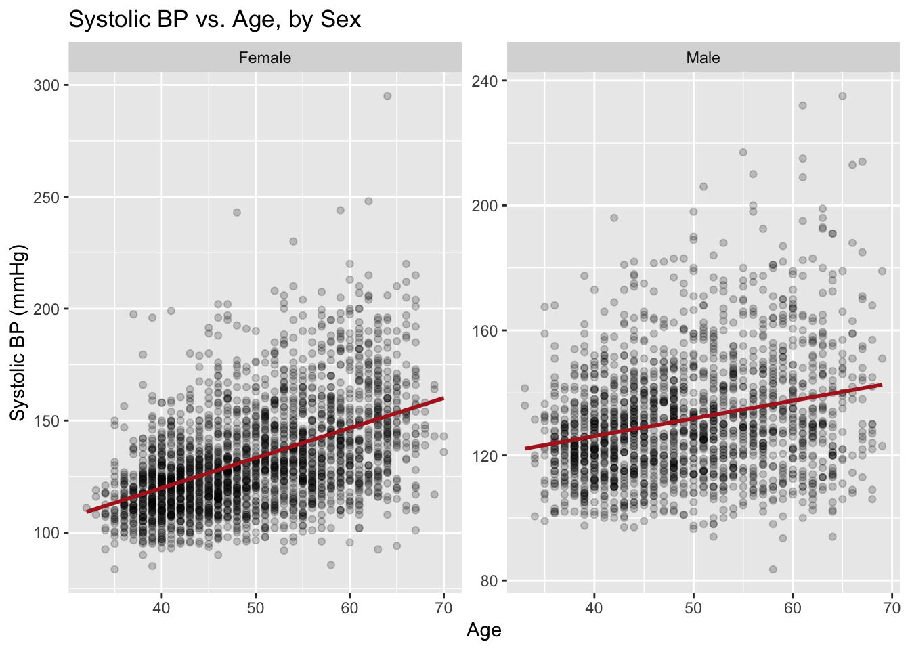
facet_grid() facets on two variables simultaneously:
ggplot(framingham, aes(x = age, y = sysBP)) +
geom_point(alpha = 0.2, size = 0.8) +
geom_smooth(method = "lm", se = FALSE, color = "firebrick") +
facet_grid(currentSmoker ~ male) +
labs(x = "Age", y = "Systolic BP (mmHg)",
title = "Systolic BP vs. Age by Sex and Smoking Status")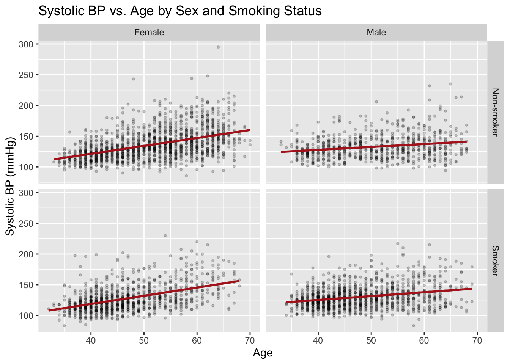
You can do the same with facet_wrap but the labels are not as nice:
ggplot(framingham, aes(x = age, y = sysBP)) +
geom_point(alpha = 0.2) +
geom_smooth(method = "lm", se = FALSE, color = "firebrick") +
facet_wrap(~ male + currentSmoker, scales = "free") +
labs(x = "Age", y = "Systolic BP (mmHg)",
title = "Systolic BP vs. Age, by Sex")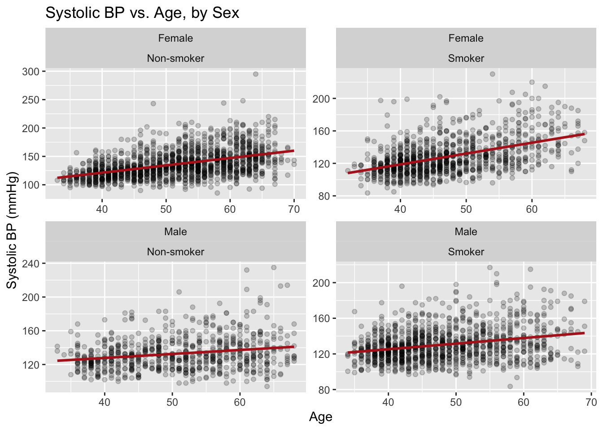
7 Labels and Annotation
7.1 labs(): Titles, Axes, and Legends
framingham |>
filter(!is.na(education)) |> # Removing those with NA for eductation (you could include)
ggplot(aes(x = reorder(education, sysBP, FUN = median),
y = sysBP, fill = male)) +
geom_boxplot(alpha = 0.7) +
labs(
title = "Systolic Blood Pressure by Education and Sex",
subtitle = "Framingham Heart Study cohort",
caption = "Source: Framingham Heart Study",
x = "Education Level",
y = "Systolic BP (mmHg)",
fill = "Sex"
) +
theme(axis.text.x = element_text(angle = 20, hjust = 1))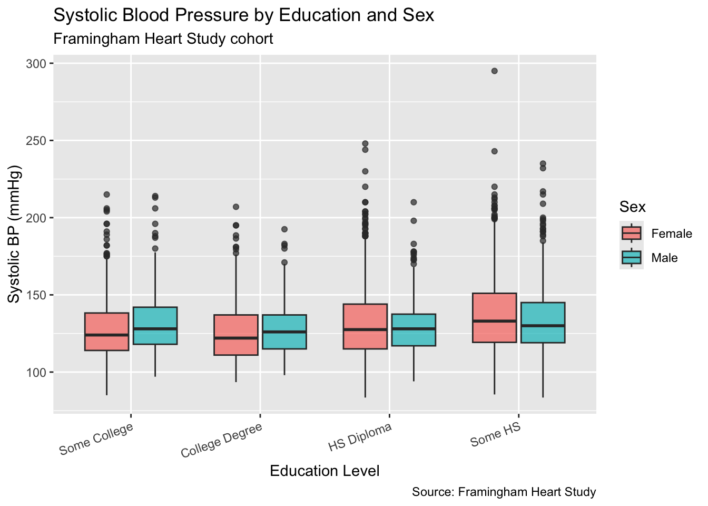
7.2 geom_text() and geom_label()
Label individual points or groups directly on the plot. Here we label the car model with the best highway mileage in each class:
best_in_class <- mpg |>
group_by(class) |>
filter(row_number(desc(hwy)) == 1)
ggplot(mpg, aes(displ, hwy)) +
geom_point(aes(color = class)) +
geom_label(aes(label = model), data = best_in_class,
nudge_y = 2, alpha = 0.6, size = 3) +
labs(x = "Engine displacement (L)", y = "Highway mpg",
color = "Vehicle class")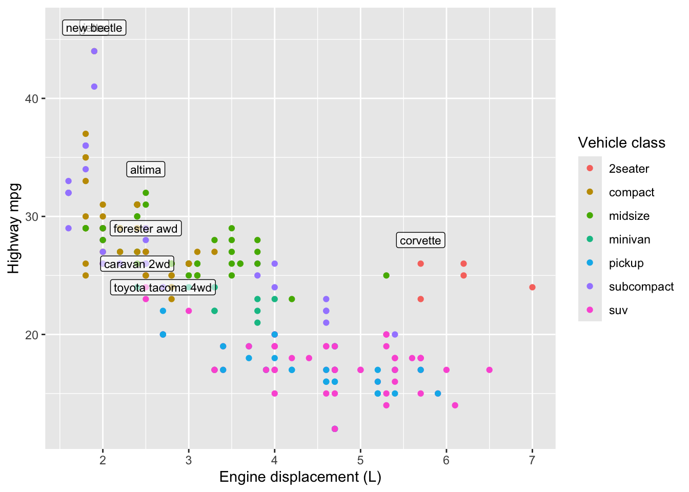
For overlapping labels, use ggrepel which automatically repositions them:
# install.packages("ggrepel")
library(ggrepel)
ggplot(mpg, aes(displ, hwy)) +
geom_point(aes(color = class)) +
geom_point(size = 3, shape = 1, data = best_in_class) +
geom_label_repel(aes(label = model), data = best_in_class, size = 3) +
labs(x = "Engine displacement (L)", y = "Highway mpg",
color = "Vehicle class")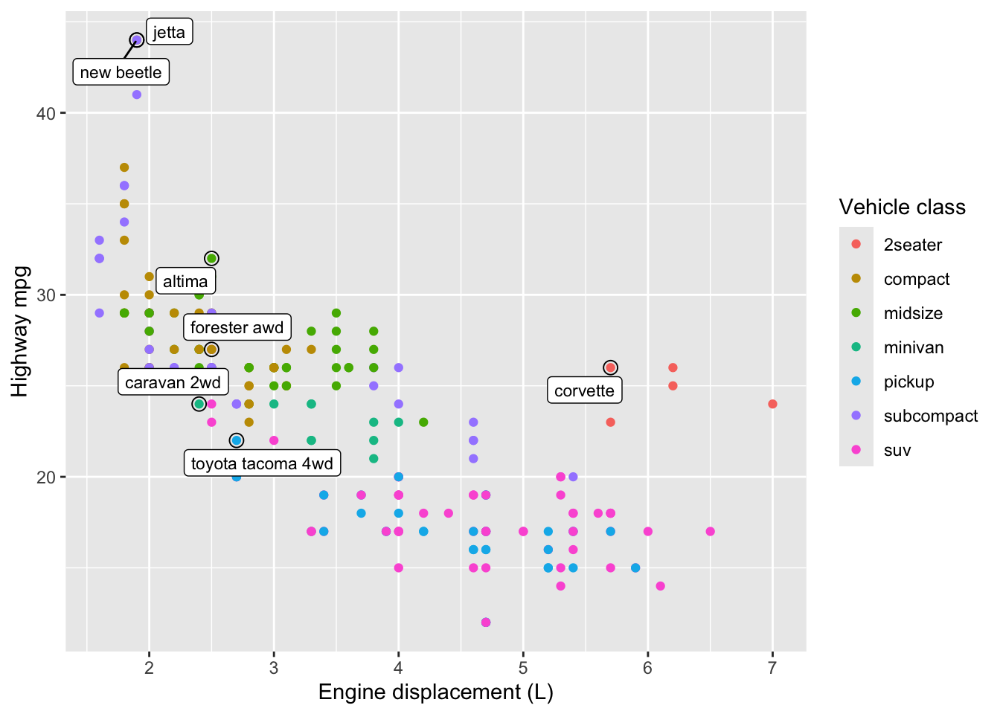
7.3 Reference Lines
Add horizontal or vertical reference lines to mark thresholds:
ggplot(framingham, aes(x = age, y = sysBP)) +
geom_point(alpha = 0.2) +
geom_hline(yintercept = 140, color = "blue",
linewidth = 1, linetype = "dashed") +
annotate("text", x = 35, y = 143,
label = "Hypertension threshold (140 mmHg)",
color = "blue", hjust = 0, size = 7) +
labs(x = "Age (years)", y = "Systolic BP (mmHg)",
title = "Systolic BP with Hypertension Threshold")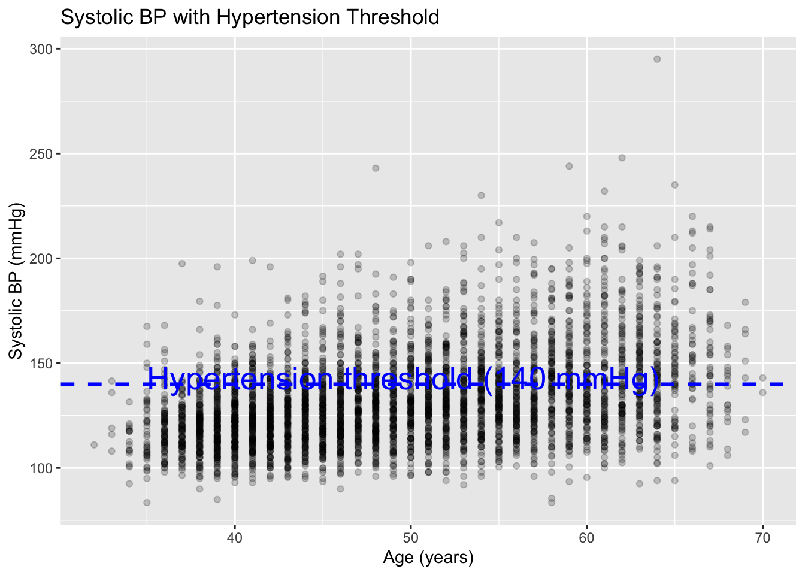
8 Scales
Scales control how data values map to visual properties. ggplot2 names them consistently: scale_<aesthetic>_<type>().
8.1 Axis Breaks and Labels
ggplot(framingham, aes(x = age, y = sysBP)) +
geom_point(alpha = 0.2) +
scale_x_continuous(breaks = seq(30, 70, by = 10)) +
scale_y_continuous(breaks = seq(80, 300, by = 40)) +
labs(x = "Age (years)", y = "Systolic BP (mmHg)")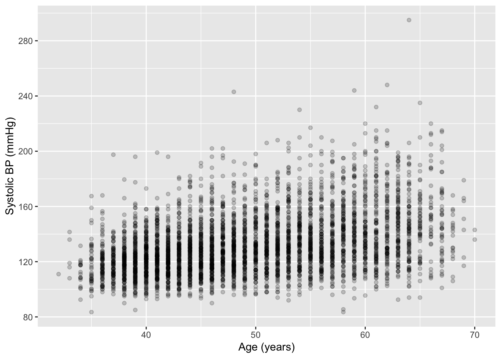
8.2 Color Scales
The default color palette is not always ideal — especially for color-blind readers. ColorBrewer palettes are designed for this:
ggplot(framingham, aes(x = age, y = sysBP, color = education)) +
geom_point(alpha = 0.4) +
scale_color_brewer(palette = "Set2") +
labs(x = "Age", y = "Systolic BP", color = "Education")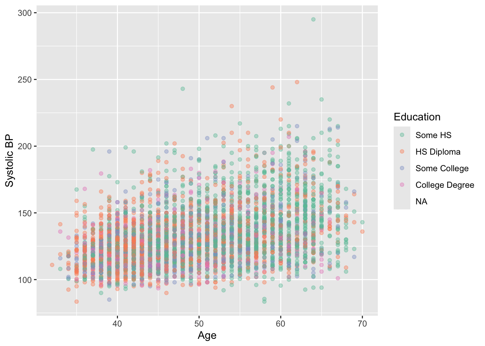
For continuous color scales, use viridis which is both colorblind-friendly and perceptually uniform:
ggplot(framingham, aes(x = age, y = sysBP, color = BMI)) +
geom_point(alpha = 0.5) +
scale_color_viridis_c(option = "plasma") +
labs(x = "Age", y = "Systolic BP", color = "BMI")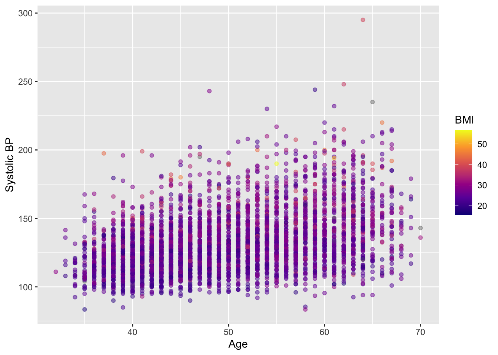
For a diverging scale (e.g., positive/negative, above/below a midpoint):
framingham |>
mutate(sysBP_centered = sysBP - mean(sysBP, na.rm = TRUE)) |>
ggplot(aes(x = age, y = sysBP_centered, color = sysBP_centered)) +
geom_point(alpha = 0.5) +
scale_color_gradient2(low = "steelblue", mid = "white",
high = "firebrick", midpoint = 0) +
labs(x = "Age", y = "Systolic BP (centered)", color = "BP\n(centered)")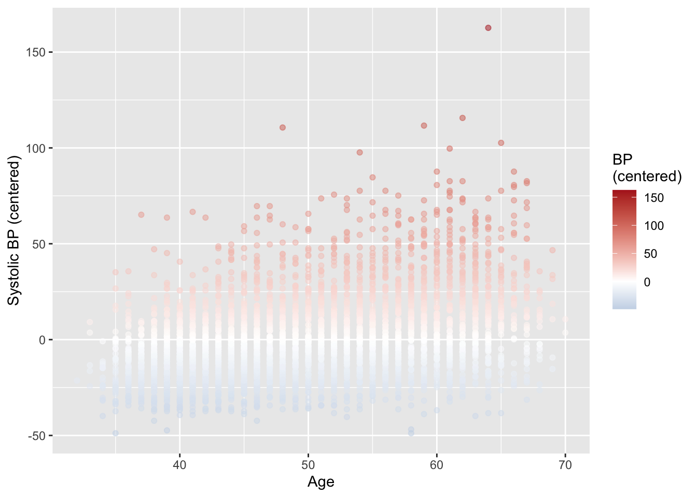
8.3 Zooming with coord_cartesian()
To zoom in without dropping data (which xlim/ylim inside scale_ would do):
ggplot(framingham, aes(x = age, y = sysBP)) +
geom_point(alpha = 0.3) +
geom_smooth(method = "lm") +
coord_cartesian(xlim = c(40, 60), ylim = c(100, 200)) +
labs(title = "Zoomed: ages 40-60, BP 100-200 mmHg")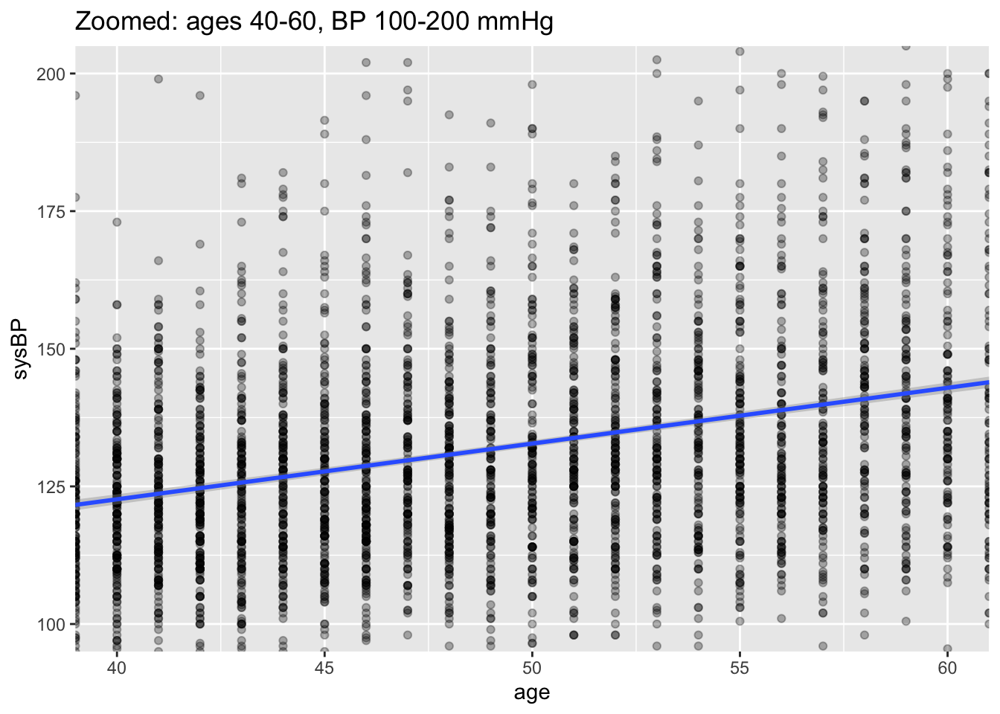
9 Themes
Themes control all non-data elements: background, grid lines, fonts, and text size.
base <- ggplot(framingham, aes(x = age, y = sysBP, color = male)) +
geom_point(alpha = 0.3) +
geom_smooth(method = "lm", se = FALSE) +
labs(x = "Age", y = "Systolic BP", color = "Sex")
base + theme_gray() # default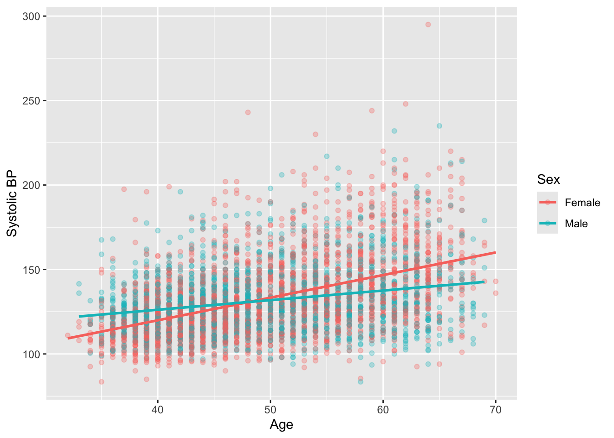
base + theme_bw() # white background, grid lines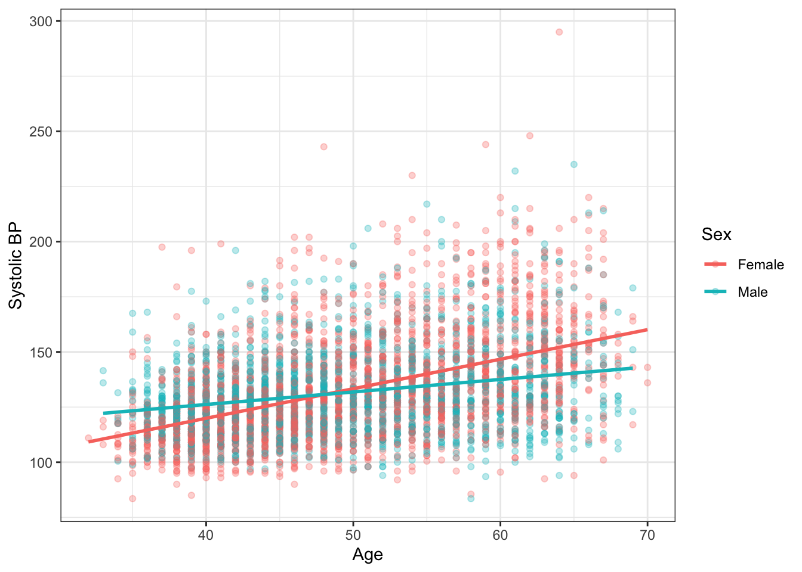
base + theme_minimal() # minimal: no background, light grid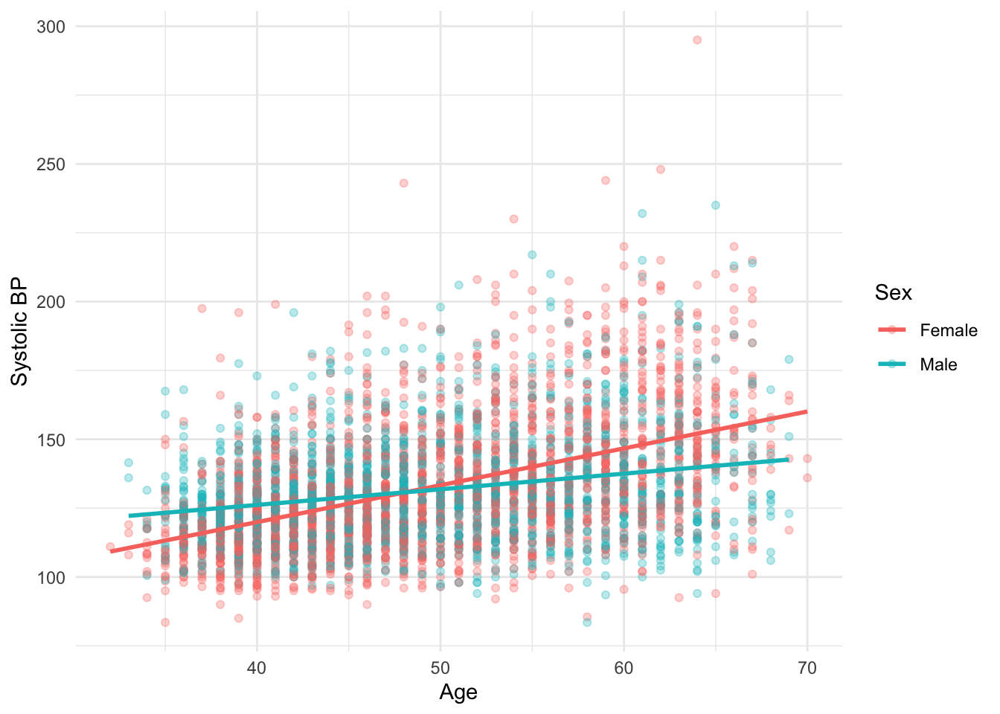
base + theme_classic() # no grid, classic axes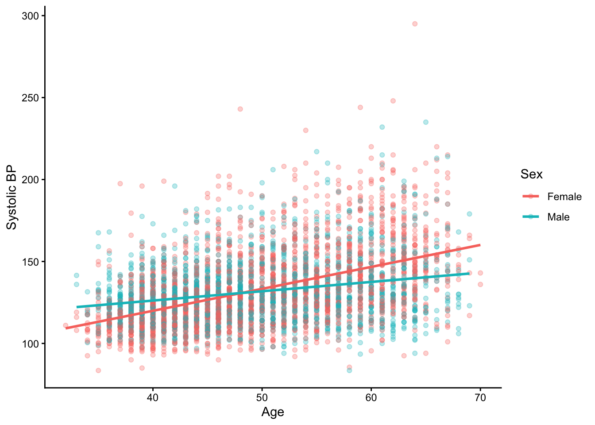
Fine-tune individual elements with theme():
base +
theme_minimal() +
theme(
plot.title = element_text(size = 14, face = "bold"),
axis.title = element_text(size = 12),
legend.position = "bottom",
panel.grid.minor = element_blank()
) +
labs(title = "Systolic BP vs. Age by Sex")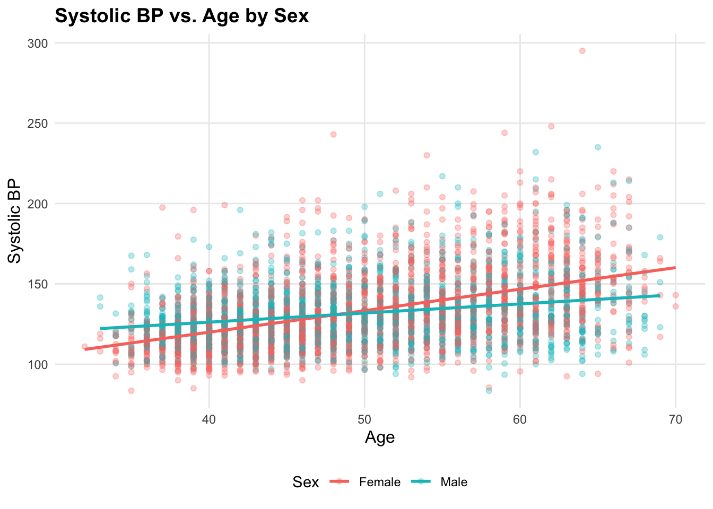
10 Saving Plots
Use ggsave() to write the most recent plot to disk. Always specify width and height for reproducibility:
ggplot(framingham, aes(x = age, y = sysBP, color = male)) +
geom_point(alpha = 0.3) +
geom_smooth(method = "lm", se = FALSE) +
theme_minimal() +
labs(x = "Age (years)", y = "Systolic BP (mmHg)", color = "Sex")
ggsave("figures/sysBP_vs_age.png", width = 7, height = 5, dpi = 300)
ggsave("figures/sysBP_vs_age.pdf", width = 7, height = 5)
Tip
Use .pdf for vector graphics (scalable, best for publication) and .png for raster graphics (best for slides and web). Always set dpi = 300 for .png to ensure print quality.
When working in Quarto, chunk options control figure output directly — no need for ggsave() in most cases:
```{r}
#| fig-width: 7
#| fig-height: 5
#| fig-cap: "Systolic BP vs. Age by Sex"
#| fig-alt: "Scatterplot of systolic blood pressure on the y-axis and age on
#| the x-axis, with separate trend lines by sex."
```11 Putting It Together: A Publication-Ready Figure
Here is a complete example building a figure from scratch with all the elements covered today:
framingham |>
filter(!is.na(education)) |>
ggplot(aes(x = age, y = sysBP, color = education)) +
geom_point(alpha = 0.15, size = 0.8) +
geom_smooth(method = "lm", se = FALSE, linewidth = 1) +
geom_hline(yintercept = 140, linetype = "dashed",
color = "gray40", linewidth = 0.8) +
annotate("text", x = 32, y = 143,
label = "Hypertension threshold", color = "gray40",
hjust = 0, size = 3) +
scale_color_brewer(palette = "Set2") +
scale_y_continuous(breaks = seq(80, 300, by = 40)) +
facet_wrap(~ male) +
theme_minimal() +
theme(
legend.position = "bottom",
panel.grid.minor = element_blank(),
strip.text = element_text(face = "bold")
) +
labs(
title = "Systolic Blood Pressure vs. Age by Sex and Education Level",
subtitle = "Framingham Heart Study cohort — linear trends per education group",
caption = "Dashed line indicates hypertension threshold (140 mmHg)",
x = "Age (years)",
y = "Systolic BP (mmHg)",
color = "Education level"
)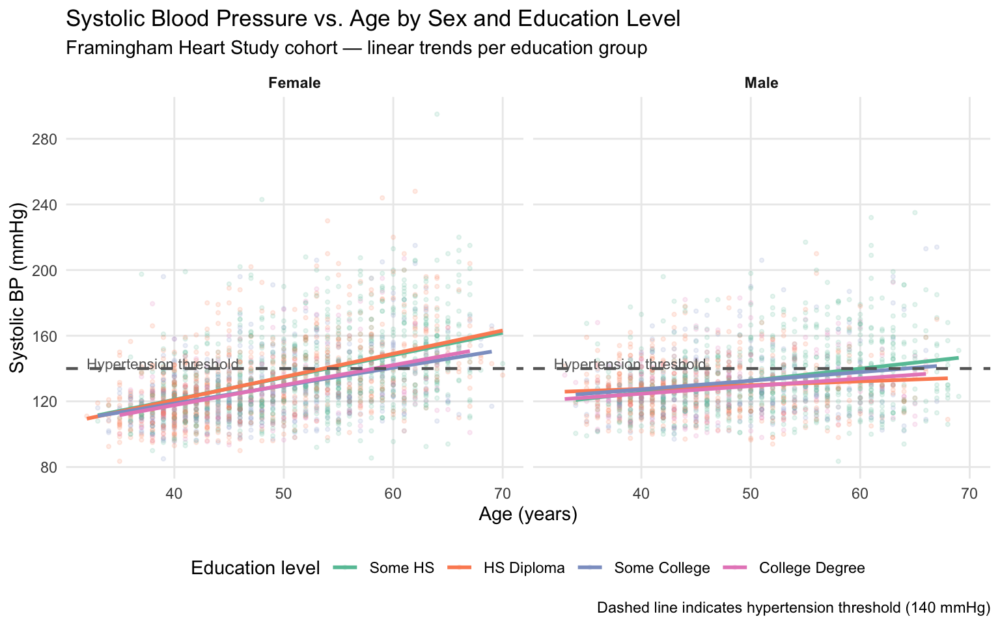
If you think this is crazy, here’s some actual code of mine that I recently used to create a figure:
cols4methods <- c("black","lightsteelblue4" ,
"firebrick1" , "palevioletred2",
"cornflowerblue","blue1", "darkgoldenrod4" ,
"maroon2", "chartreuse4" , "coral")
shape_vals <- c(15:24)
pos_wid <- 0.88 ## controls the spread of the points and the width of the bars
pos_siz <- 2.5 ## size of the points
# ..... Lots of code missing ......
## Creating the plot. The 'pdf' can be uncommented when creating a pdf of the plot.
mse_plot_fpc <- ggplot(d_plot_mse_fpc %>% filter(M == 5625), aes(x=as.factor(n.basis), y=mean_mse, color = Method)) +
scale_color_manual(values=cols4methods[c(1,4,5,6)]) +
geom_errorbar(aes(ymin = min_mser, ymax = max_mser),
width = pos_wid,
position=position_dodge(width=pos_wid)) +
facet_wrap(~sparse_gr) +
theme_bw() +
theme_light() +
geom_point(aes(shape=Method), size=pos_siz, position=position_dodge(width=pos_wid)) +
scale_shape_manual(values=shape_vals[c(1,4,5,6)]) +
xlab("Number of Basis Functions") +
ylab("") +
theme_bw(base_size = 10, base_family = "Helvetica") +
theme(strip.background = element_blank(),
strip.placement = "outside",
axis.text=element_text(color="#666666",size=8),
axis.title = element_text(color="#666666",
face="bold", size=11),
strip.text.x = element_text(size=10),
strip.text.y = element_text(size=10))
# ..... Lots of code missing ......
mse_plot <- ggplot(d_plot_mse, aes(x=re, y=mean_mse, color = Method)) +
scale_color_manual(values=cols4methods) +
geom_errorbar(aes(ymin = min_mser, ymax = max_mser),
width = pos_wid,
position=position_dodge(width=pos_wid)) +
facet_wrap(~M_gr) +
theme_bw() +
theme_light() +
geom_point(aes(shape=Method), size=pos_siz, position=position_dodge(width=pos_wid)) +
scale_shape_manual(values=shape_vals) +
xlab("Number of random effects") +
ylab("Scaled RMSE") +
theme_bw(base_size = 10, base_family = "Helvetica") +
theme(strip.background = element_blank(),
strip.placement = "outside",
axis.text=element_text(color="#666666",size=8),
axis.title = element_text(color="#666666",
face="bold", size=11),
strip.text.x = element_text(size=10),
strip.text.y = element_text(size=10))
library(ggpubr)
final_plot <- ggarrange(
mse_plot, mse_plot_fpc,
labels = c("A", "B"),
common.legend = TRUE,
legend = "right",
nrow = 1)
ggsave("Mse_figA_all.pdf", width = 7, height = 3)12 Exercises
Exercise 1. Make a histogram of BMI in the Framingham data. Try at least three different binwidth values. Which reveals the most useful structure? Add a vertical line at BMI = 30 (the obesity threshold) using geom_vline() and annotate it with annotate().
Exercise 2. Compare the distribution of total cholesterol (totChol) across education levels using (a) overlapping density plots with geom_density() and (b) boxplots ordered by median cholesterol. Which display is more informative and why? Add proper labels and a theme to both.
Exercise 3. Make a scatterplot of age vs. totChol, colored by currentSmoker. Add separate linear trend lines for smokers and non-smokers using geom_smooth(method = "lm"). Facet by sex. Use a ColorBrewer palette and theme_bw(). What do you notice about the relationship between age and cholesterol for smokers vs. non-smokers?
Exercise 4. Using the diamonds dataset, make a scatterplot of carat vs. price. The raw scale will suffer from severe overplotting — solve this with geom_bin2d() or alpha. Then apply scale_x_log10() and scale_y_log10(). Label the axes with the original units (carats and dollars) and add a title summarizing the main finding.
Exercise 5 (Challenge). Build a single publication-ready figure using Framingham data that shows the 10-year CHD rate (proportion with TenYearCHD == "Yes") by age group and sex. Steps: (a) create an age group variable with cut() or case_when() (e.g., 30–39, 40–49, 50–59, 60+), (b) compute CHD rate per group using group_by() and summarize(), (c) plot with geom_col() or geom_line(), (d) facet or color by sex, (e) add all labels, a sensible theme, and ggsave() it to a file.